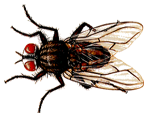
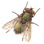

Milçəklər
Aşkarlanmış Növlər
-
Musca spp.
- 
-
Stomoxys spp.
- 
Yaşam tərzi
Qara milçəklər istiyə çox həssas olduğu kimi qoxuya da çox həssasdırlar. Onlar tez-tez kollarda və ya bitkilərin yarpaqlarının kölgəsində istirahət edirlər. Onların qidalanma yerləri heyvan və insan qalıqları, geniş miqyasda heyvan və insan nəcisləridir. Gündüz qida ala biləcəkləri yerlərdə yaşayan bu milçəklər gecələr dincəlmək üçün mebel, kəndir, naqil və tavanın kənarlarında qalırlar. Zibil və kanalizasiya yataqları bu milçəklər üçün ideal qidalanma yeridir. Hər cür üzvi tullantıların ortasında inkişaf edə bilir. Yetkinlərin ömrü 40-50 gündür. Ömrü boyu hər dəfə 5-6 dəfə 100-150 yumurta qoyurlar. Bu yumurtalar ətraf mühitin temperaturundan asılı olaraq 16 - 35 0C -də 7 - 44 gün ərzində yumurta, sürfə və pupa mərhələlərindən sonra yetkinləşirlər. Yediklərini yenə yeməklərin üzərinə qusaraq parçalayır və özləri yeyə biləcəkləri bir forma çevirirlər. Bu milçək növləri bədənlərinin həm daxili, həm də xarici quruluşunda ; Virus, bakteriya, protozoa, helmint yumurtaları kimi patogen mikroorqanizmləri daşıyaraq bir çox xəstəliklərin ötürülməsinə səbəb olurlar.
Milçəklərlə mübarizə
milçək tələsi

Sağdakı şəkildə fiziki mübarizə çərçivəsində tətbiq etdiyimiz milçək tələsinin istifadə sahəsi olaraq çox geniş bir əraziyə təsir etdiyini görə bilərik. İstifadəsi nəticəsində içərisinə çoxlu sayda ev milçəyi toplayaraq ətrafdakı ev milçəyi problemini asanlıqla həll etdiyi görülüb. Bu səbəbdən də qeyd etmək lazımdır ki, bu məhsulun məişət sincəyi problemi olan müəssisələrdə və digər sahələrdə istifadəsi praktikada etibarlıdır. Sözügedən milçək tələsi ətrafına cəzb edici milçək qoxusunu yayır, onları özünə tərəf çəkir və milçəklərin içəridə toplanmasına səbəb olur. İçəriyə girən milçəklər çölə çıxa bilməmə səbəbindən tələnin içində qalaraq ölürlər. İstifadəsi asan və praktiki olan bu məhsulun açıq yerlərdə istifadə edilməsinə üstünlük verilir və qəti bir həll təqdim edir. Həmçinin ev milçəyi mübarizəsində; Qapalı ərazilərdə sprey tətbiqi, ev milçəyi müşahidə olunan yerlərdə yapışqanlar, açıq ərazilərdə ; atomizer tətbiqi, pulverizator tətbiqi və s. istifadə olunur.